Elisha Rackley
Since the end of Assignment 2, I believe the group dynamic has changed from being a group of strangers working together for a university assignment to being friends creating a business together. As we have gotten to know more about each other, it has certainly made group meetings less of a chore and something I have personally looked forward to.
Fletcher Petersen
Jarrod Petersen
Keegan Whitfield
Mathew Lawton
As we, Team Valour, once again relieved ourselves of the pressures of A2 and thought we could have a little break, the realization that A2 was nothing in comparison to A3 set in but this time, there were no nerves, only grit and determination to succeed as a team.
Team Valour was very collaborative and excelled in forming the basic structure and templates for the entire team to engage in, following on from the platform we created during assignment 2.
I believe this led our group to succession in regard to confidently collaborating on assignment 3 and assignment 5.
Something I found interesting during the weeks within assignment 3 and 5 were once again the ease of communication with my team and how well everybody worked together in a supportive environment facilitated through MS Teams to succeed as a group and most notably how much Jarrod Petersen had risen to become a leader the entire team relied upon for the succession of assignment 3 and 5. In reflection of Jarrod’s, “My Profile”, section on his assignment 1 eprofile where he mentioned not believing he had a leadership personality or possessing a creative personality, I believe this course has proven that Jarrod can be both creative and be a leader.
Group Reflection
The majority of the group agrees that communication was one thing the group handled well. Also agreeing that, as a group that formed late with late additions and no prior communication/planning before the group formation, that we have all gelled well together, been efficient in completing tasks. Everyone also seems to agree that it was great to have the team all together twice a week despite being in different locations and time zones, but outside of the meetings it was a bit difficult with there being very contrasting work schedules and utilising very different times of the day to complete work for the assignment. We have all come together with very different personalities and with no two members having the same personality according to the myers-briggs test.
Some room for improvement for the next assignment would be that the group could start earlier and have less pressure towards the due date. Which should be easier as we have discussed some aspects of Assignment 3 together already and we are already a group and familiar with each other. We all seem to be getting along really well, with genuine catch up happening in team meetings before the meeting actually starts so there shouldn’t be any change to the group members for the next assignment.
It seems to be unanimous among the team that the way tasks were delegated could be improved on. This would make it clearer for the group to understand the exact task they are responsible for and to ensure the workload is spread evenly amongst the team. It would also benefit the team as a whole as we would likely progress towards our goals quicker if we aren’t spending time trying to work out what still needs to be completed and what has yet to be done.
Another thing we could try do in future is to use the repository more instead of Microsoft Teams so that way it is clearer that everyone is contributing even though they aren’t the one pushing their paragraph to the website as the repository currently does not reflect the contributions accurately. This should be easier to do down the track now that we have the website there and everyone is more familiar with GitHub and signed into their RMIT accounts as opposed to collaborating with the group repository on personal accounts by mistake so their RMIT accounts does not accurately reflect their contribution.
Commits from the GitHub Repository
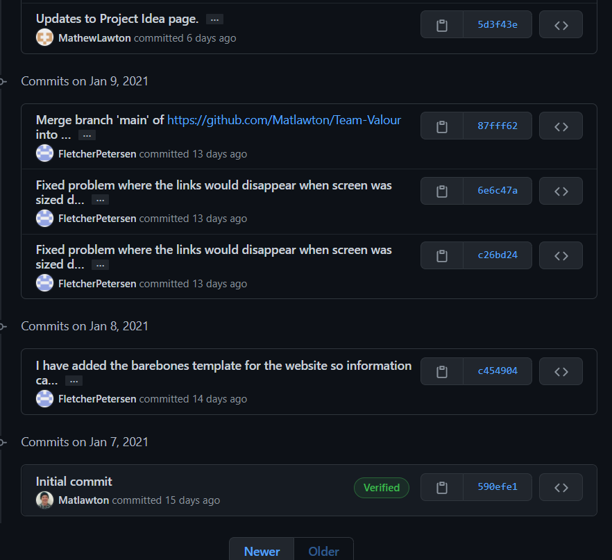 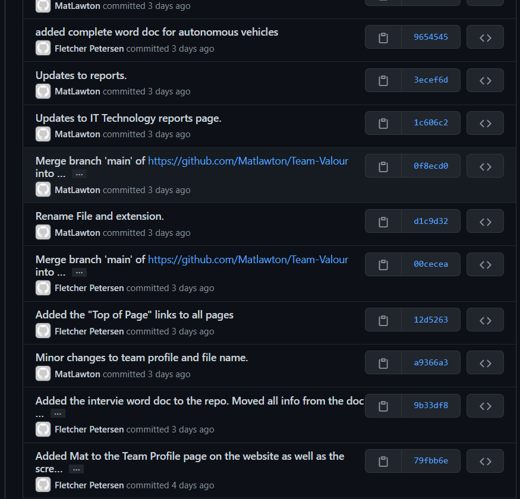
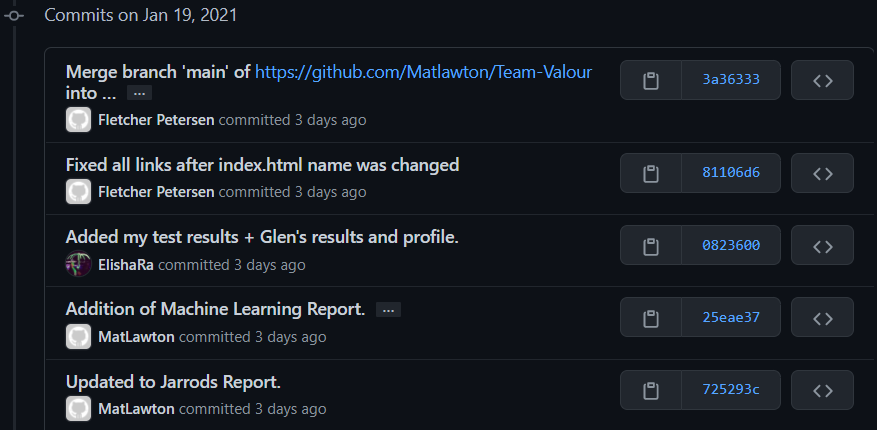
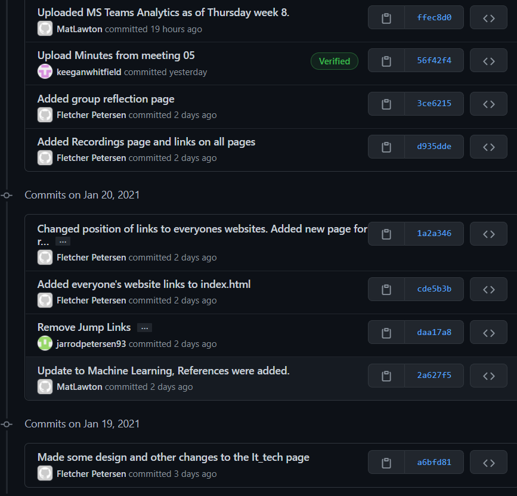
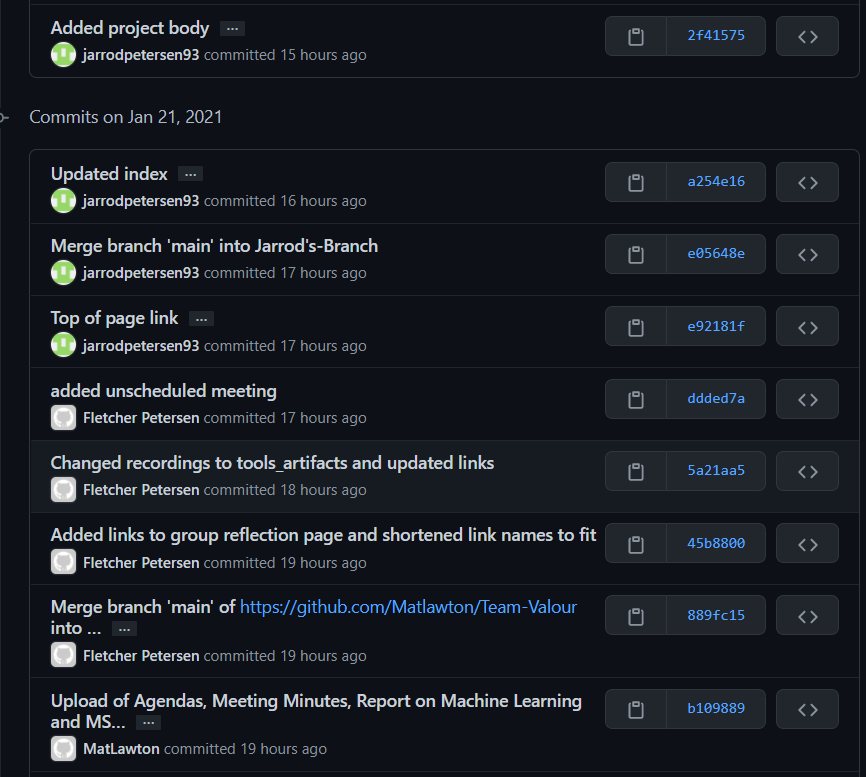
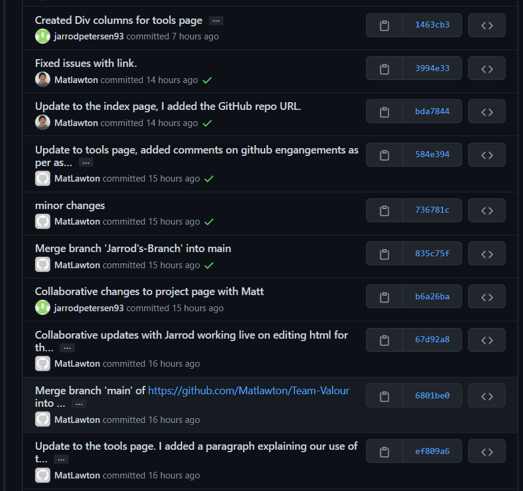
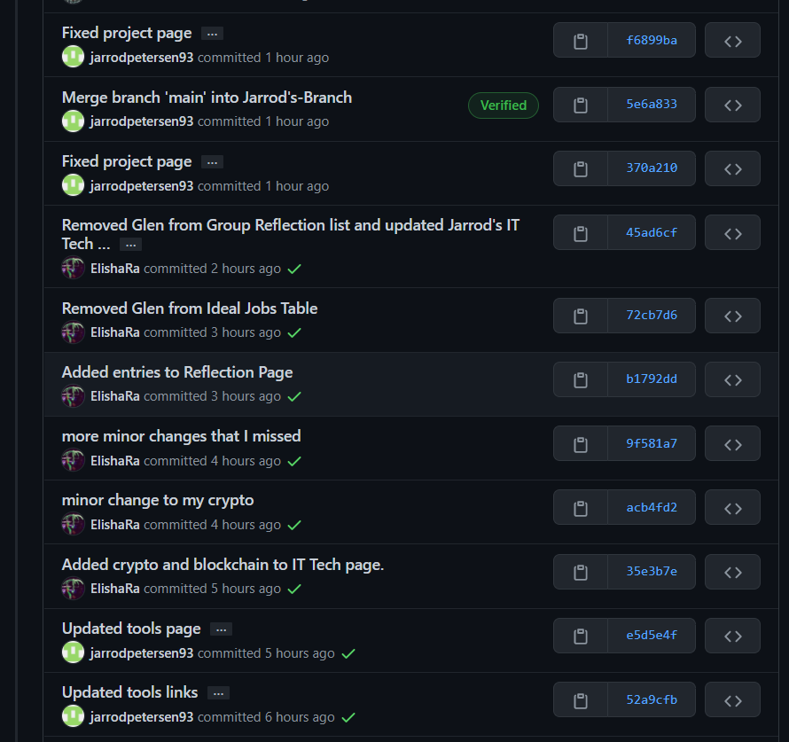
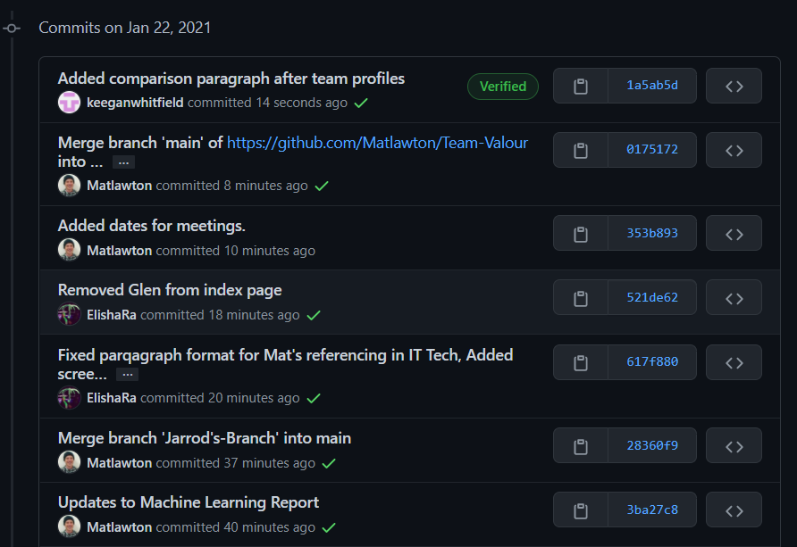
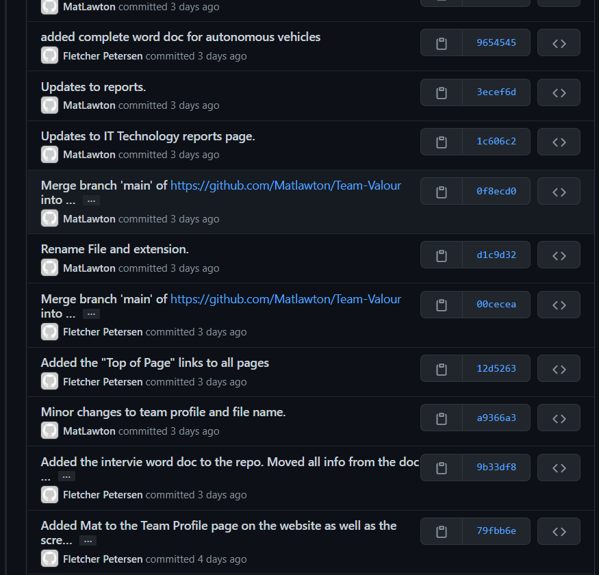
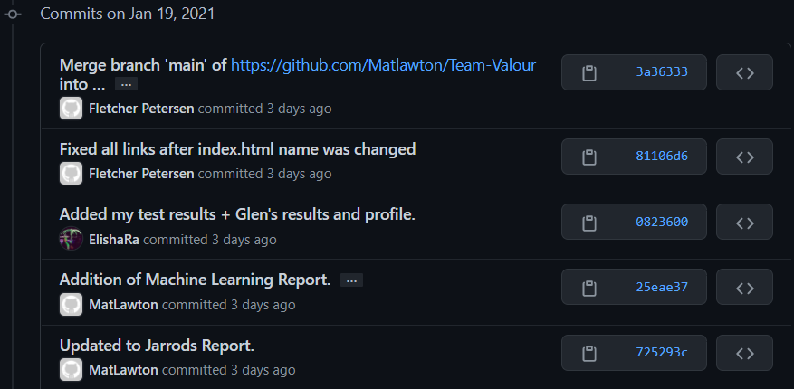
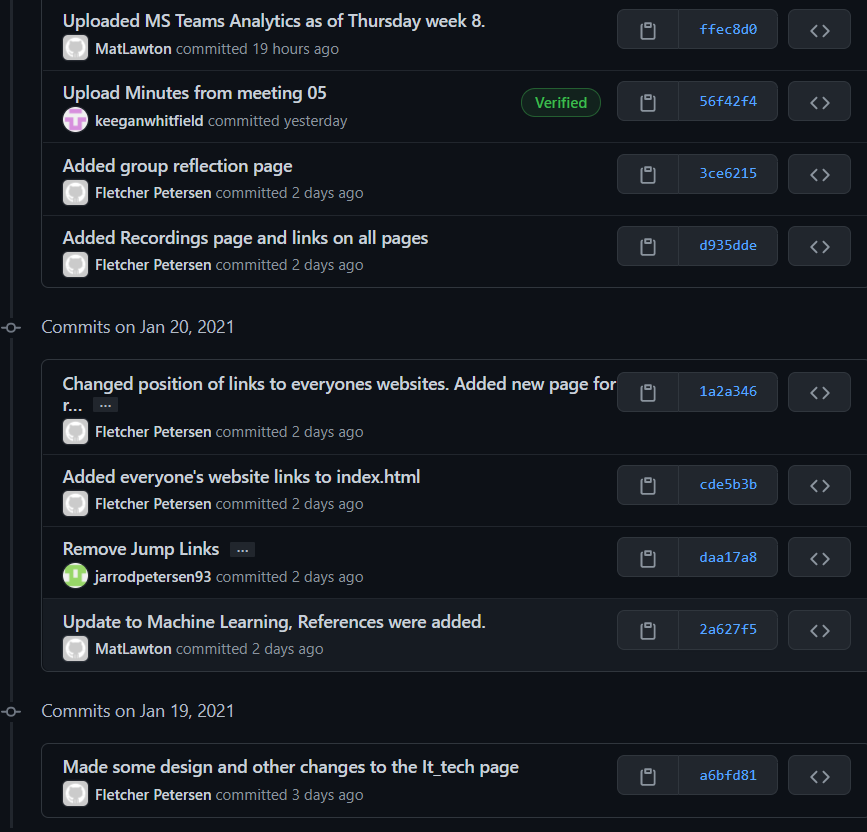
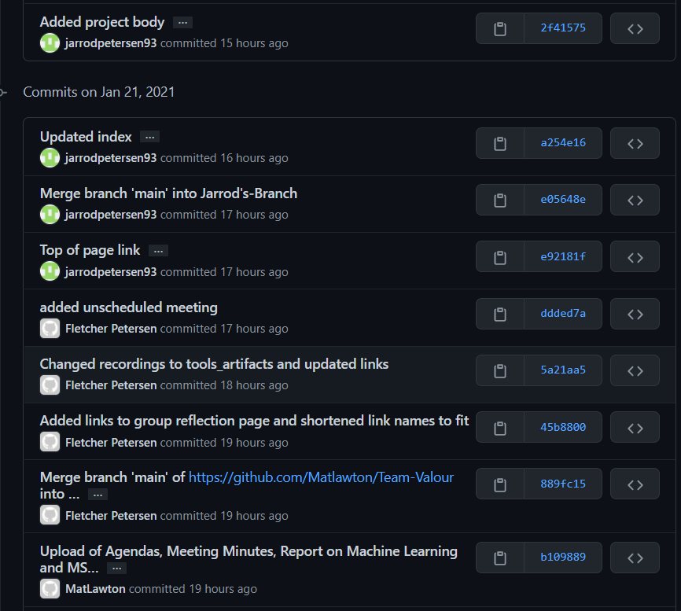
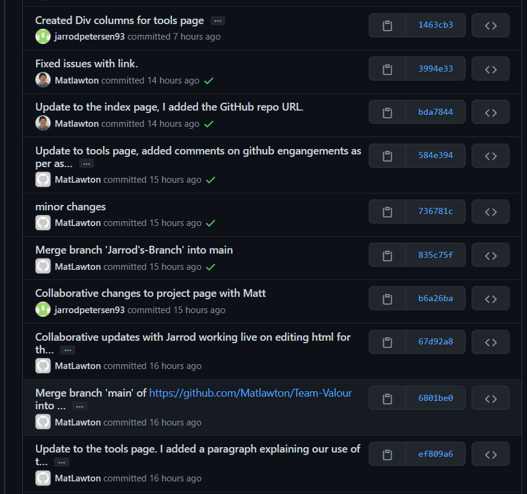
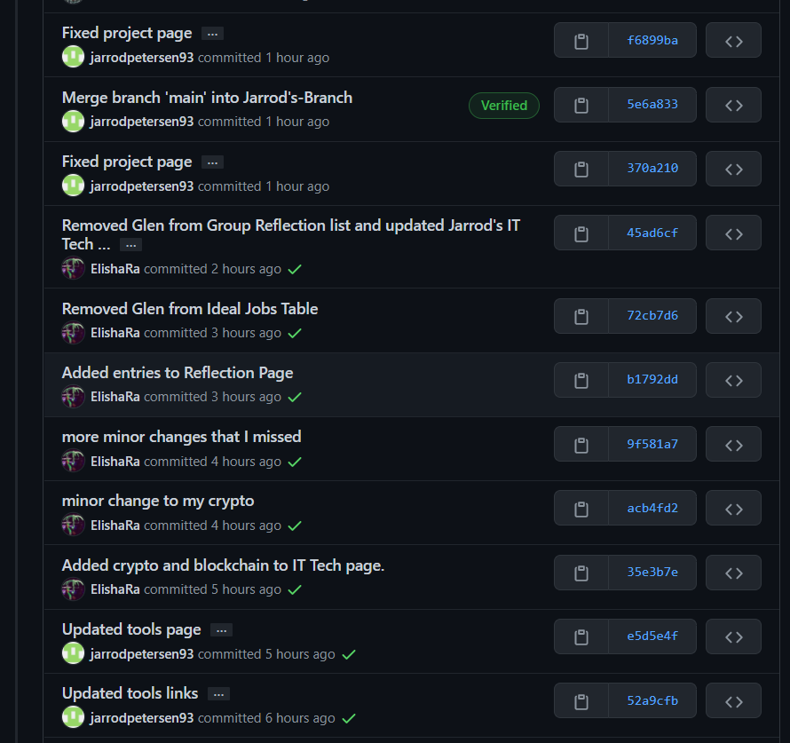
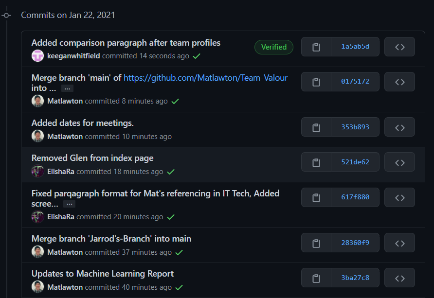